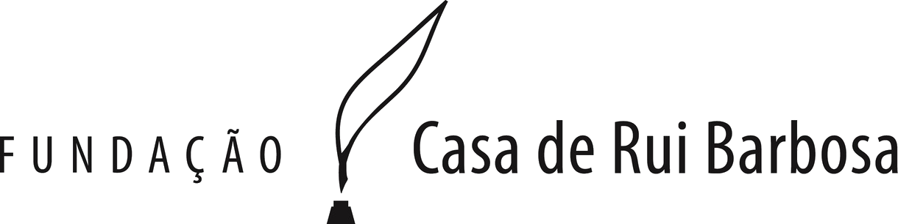

Termo de Uso
Termos de Uso – Rede sem fios (WiFi) – Fundação Casa de Rui Barbosa Pelo presente termo, o usuário abaixo identificado, declara estar ciente e concordar com as condições a seguir expostas, bem como, autoriza a Fundação Casa de Rui Barbosa - FCRB a disponibilizar para seu recebimento, informações institucionais. A FCRB não cede ou comercializa, sob nenhuma forma, qualquer informação individual do usuário sem a expressa autorização do mesmo. Em atendimento a legislação vigente, os dados do usuário cadastrado somente serão fornecidos as autoridades policiais, mediante solicitação oficial. As credenciais (login e senha) de acesso a navegação é de uso restrito e pessoal e torna o usuário cadastrado, responsável exclusivo pela utilização e acesso adequado da rede, isentando a FCRB de qualquer responsabilidade em função de dano decorrente da inadequada utilização da mesma. O usuário assume todos os ônus e responsabilidades decorrentes de seus atos e de sua conduta como usuário de rede Internet, respondendo, ainda, pelos atos que terceiros pratiquem em seu nome, por meio do uso de suas credenciais de acesso. O usuário se compromete a fornecer informações verdadeiras, corretas, atuais e completas sobre si mesmo, neste momento, sob pena de, em tese, incorrer no crime de falsidade ideológica. Embora a FCRB utilize as melhores tecnologias e empenhe seus maiores esforços, esta não possui condições de controlar com caráter prévio a ausência de vírus nos conteúdos transmitidos, difundidos, armazenados, recebidos, obtidos, colocados à disposição, ou acessíveis por meio da utilização dos serviços, nem a ausência de outros elementos que possam produzir alterações no equipamento informático do usuário ou nos documentos eletrônicos e fichários armazenados ou transmitidos desde o equipamento informático do usuário. Tendo em vista o disposto no item anterior, a FCRB SE EXIME DE QUALQUER RESPONSABILIDADE PELOS DANOS E PREJUÍZOS DE QUALQUER NATUREZA QUE POSSAM DECORRER DA PRESENÇA DE VÍRUS OU DE OUTROS ELEMENTOS NOCIVOS NOS CONTEÚDOS E QUE, DESTA FORMA, POSSAM PRODUZIR ALTERAÇÕES E/OU DANOS NO SISTEMA FÍSICO E/OU ELETRÔNICO DOS EQUIPAMENTOS DO USUÁRIO. A FCRB não tem obrigação de controlar, e não controla, o conteúdo e natureza dos conteúdos transmitidos, difundidos ou postos à disposição de terceiros pelos usuários através dos serviços compreendidos no objeto do presente contrato. É vedada a eventual utilização/acessos a sites com propósitos ilegais, tendo o usuário o pleno conhecimento de que toda as suas informações de acesso serão armazenadas pelo período mínimo de um ano. A conta criada com login (CPF) e senha - pelo usuário - terá direito a 1(um) dispositivo vinculado. Assim sendo e tendo pleno conhecimento de todo conteúdo acima descrito, declara concordar expressamente com todos os termos acima descritos.